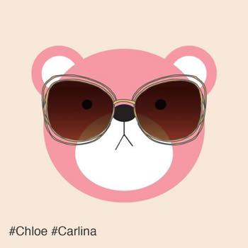
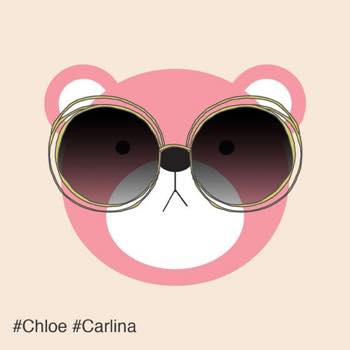
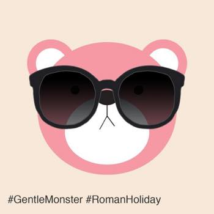
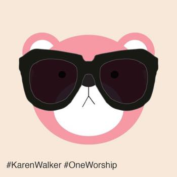
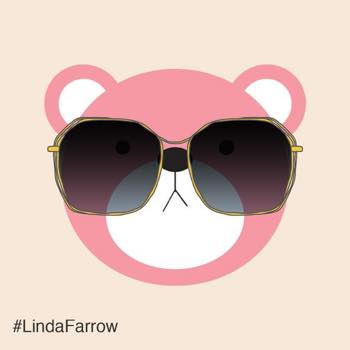
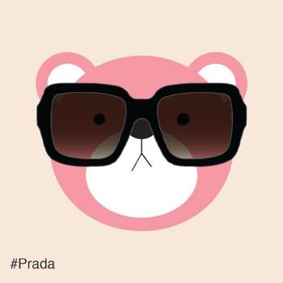
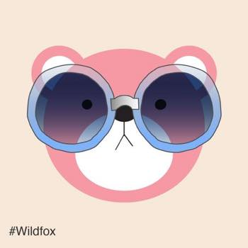
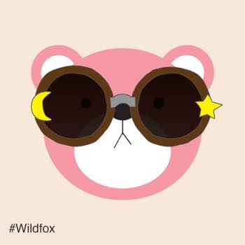
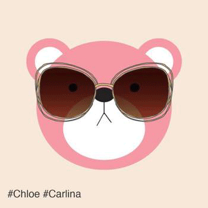

Current Sunglasses Collection
작년부터 나홀로 불타오르는 선글라스 집착 ^^;;;
그동안 사모은 선글라스 콜렉숑 입니다.

끌로에 카를리나 선글라스 버터플라이 쉐입

위에 버터플라이를 구매하고 맘에들어서 라운드 타입도 이어서 구매
렌즈 엄청 큽니다
얼굴가리개로 효과만점 ^^

젠틀몬스터 로만홀리데이
얼굴이 땡그래서 동그란 프레임 안 어울릴줄 알았는데 의외로(?) 괜춘합니다
자주 쓰고 다니는 선글 탑3에 드는 모델 :)

카렌워커 원워십
굉장히 흉악하게 생겼어요
근데 착용하면 사진발 훌륭합니다 (나말고 선글라스가 ㅋㅋㅋㅋㅋ)
실물은 촘 투박하고 박력만점인데 사진찍으면 선글모양이 참으로 이쁩니당 :3

린다페로우
열심히 찬양중
늠 가볍고 이쁘고 좋습니다!!! ㅜㅜ

프라다 네모 선글라스
이건 기분에 따라 어떤날은 엄청 잘 어울리는것 처럼 보였다가
어떤날은 또 내가 이걸 왜 샀지? 싶은 그런 모델 ^^;;;

와일드폭스
끌로에랑 비슷한 시기에 구입
이때 땡그란 렌즈 엄청 찾아댕기고 있었던듯 ^^;;;

그리고 동일 모델에 양쪽에 달이랑 별 무늬 있는 제품을 발견하고 잽싸게 또하나 구매했더랬죠 :3
최근에는 젠몬 틴트 선글라스하나가 맘에듭니다 :3
10개만 사고 그만산다했는데 아직 8개니까 괜찮아 (←;;)

:3